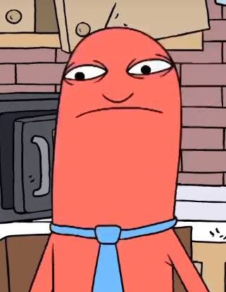
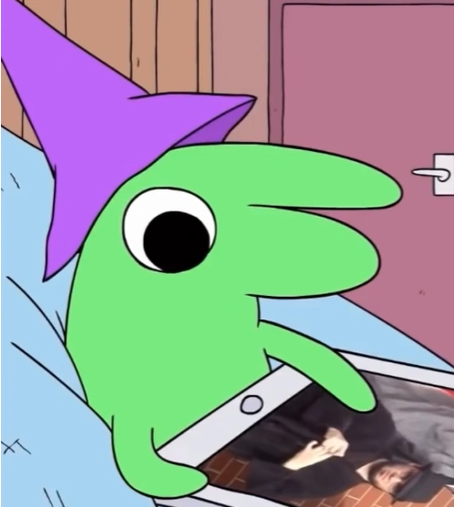

Pim Pimling
Personalidade
Pim é uma pessoa despreocupada que tem paixão por animar as pessoas de sua tristeza. Ele é um pacote de alegria e sempre adora ajudar amigos, familiares e até mesmo estranhos. Pim também gosta de mostrar gratidão beijando as pessoas. Apesar de sua boa índole e de ser a bússola moral de Charlie, seu melhor amigo, ele se mostra ingênuo.
Isso é exibido em muitos momentos, sendo um dos mais memoráveis quando ele estava em uma missão para fazer uma pessoa suicida sorrir e gritou “EU AMO CRIANÇAS !! :)" em público. Charlie percebeu isso e disse a ele que não era uma boa ideia gritar isso nos subúrbios.
Gosta
- (Ajudar) Crianças
- Fazer as pessoas sorrirem
- Dave land
- (A ideia de ter uma) Familia
Não Gosta
- Tópicos Depressivos
- Violência
- Escutar as birras do charlie
Frase
"Eu adoro ajudar criança. Eu gosto de criança, Charlie. EU AMO CRIANÇA!!!"
Amigos
- Charlie
- Alan
- Glep
- O Chefe
- Desmond
- Sr. Sapo
Inimigos
- Amigos da cara fechada. †
- Demônio da Floresta. †
- Mip. †
- Charlie (brevemente no episódio 6)
Primeiro episódio
"Desmond vai passear"
Último episódio
"Smiling Friends vão para o Brasil"


Charlie Dompler
Personalidade
Comparado a Pim , Charlie é muito mais pragmático, muitas vezes tentando ajudar as pessoas de maneiras que podem ajudar a longo prazo, como tentar consertar a imagem do Sr. Frog quando o anfitrião disse que não lamentava engolir o TMZ repórter, ou quando ele tentou ajudar Shrimp a se tornar mais atraente e seguir em frente ao invés de tentar reconquistar Shrimpina, pois ele descobriu que provavelmente havia um motivo para o término dos dois.
No entanto, esse pragmatismo costuma assumir a forma de preguiça total, pois ele costuma tentar fazer um trabalho o mais rápido possível, apesar das consequências, como sugerir que ele e Pim deixem Desmond se matar em vez de ajudar a consertá-lo.
Charlie também parece se importar com sua imagem mais do que Pim, ou pelo menos não gosta da cultura do cancelamento, afirmando que ele não se veste para o Halloween caso sua fantasia seja considerada ofensiva daqui a dez anos. Apesar de sua preguiça e egoísmo, Charlie tem alguns princípios morais básicos, pois se opõe a qualquer tipo de homicídio e faz de tudo para resolver o assassinato de Simon S. Salty.
Gosta
- Fast Food
- Jogar video game
- Tocar instrumentos
Não Gosta
- Trabalho duro
- Cultura do cancelamento
- Fantasias de Halloween
Vulgos
- Homem amarelo
- Charlie o herói
Amigos
- Pim
- Namorada (Sem nome)
- Alan
- Glep
- O Chefe
- Desmond
- Camarão
- Mip
- Sr. Sapo
Inimigos
- Cruel e Torto †
- Jeremias
Primeiro episódio
"Desmond vai passear"
Último episódio
"Smiling Friends vão para o Brasil"


Alan
Personalidade
Alan é geralmente tenso e impassível. Ele é uma espécie de "Maluco da Organização" como é visto em " Desmond vai passear", quando ele fica obcecado por um clipe de papel desaparecido. No mesmo episódio, ele também mostra ter um amor por queijo, como visto nele procurando por seu pedacinho que faltava em seu estoque. Em geral, Alan se mostra um personagem altamente organizado, um tanto excêntrico, que mantém obsessivamente o controle de suas coisas e leva seu trabalho muito a sério.
Gosta
- Queijo
- Fazer o inventario
- Organização
Não Gosta
- Bagunça
- Ser crucificado
- Pim fazendo merda
- Tomar tiro no olho com amendois
Frase
"Eu so queria o meu QUEIJO!"
Amigos
- Charlie
- Pim
- Glep
- O Chefe
Inimigos
- Bliblies
Primeiro episódio
"Desmond vai passear"
Último episódio
"Smiling Friends vão para o Brasil"


Glep
Personalidade
Glep é um bicho preguiçoso com uma ampla gama de emoções. Ele se irrita facilmente, como mostrado em várias ocasiões, um exemplo quando Alan pergunta se pegou um clipe de papel em "Desmond vai passear".
Gosta
- Jogar jogos no tablet
- Dormir
- Cuspir nas pessoas que ele não gosta
- Brincar com Cubo Mágico/Rubik
Não Gosta
- Rex
- Ser acusado de coisas
- Receber Críticas
Armas
- Cuspir
Amigos
- Charlie
- Pim
- Alan
- O Chefe
Inimigos
- Rex †
Primeiro episódio
"Desmond vai passear"
Último episódio
"Smiling Friends vão para o Brasil"


O Chefe
Personalidade
O chefe é um indivíduo altamente excêntrico, mas muito amigável.
Ele é educado e casual com seus funcionários e parece genuinamente confiar neles e considerá-los seus amigos.
Ele também é muito apaixonado e entusiasmado em administrar seus negócios, pois sempre responde rapidamente aos clientes, independentemente da ocasião (embora às vezes jogue videogame em seu escritório).
Assim como Charlie e Pim, ele também tem o dom de fazer as pessoas sorrirem e parece ser ainda mais habilidoso nisso do que seus próprios funcionários quando a situação exige.
Gosta
- dança dança revolução
- Teoria de Deng Xiaoping
- Espaguete
- Seu bebê
- massagens nuas
- Negócios
- Trazendo alegria para as pessoas
Não Gosta
- Amigos da cara fechada
- BlackFace
- As mordidas de seu bebê
- empresas concorrentes
Armas
- M16A1
Amigos
- Charlie
- Pim
- Alan
- Glep
Inimigos
- Demônio da Floresta.†
- Cruel e Torto †
Primeiro episódio
"Desmond vai passear"
Último episódio
"Smiling Friends vão para o Brasil"


Desmond
Erá um homem deprimido que vivia na casa de sua mãe depois de ter vivenciado a perda de seu cachorro e o abandono de sua esposa e filhos. Sua felicidade e propósito na vida foram restaurados graças aos esforços dos Smiling Friends Pim e Charlie .
Gosta
- Matar Blibies
Não Gosta
- Vida (brevemente)
Amigos
- Pim
- Charlie
Inimigos
- Blibies
Sr. Sapo

Ele é nomeado "um dos homens mais ricos e poderosos do planeta". Apesar disso, ele é muito instável e impulsivo em suas ações, bem como hiperativo em seus movimentos (provavelmente causados pelo abuso de substâncias).
Gosta
- Assistir clipes de Jimmy Fallon no YouTube.
- Cheirar cocaina roxa
Não Gosta
- Não ter seu próprio show
- Aqueles MALDITOS ########
Amigos
- Charlie
- Pim
Inimigos
- Rex
Camarão
Está deprimido por seu relacionamento com Camarina ter chegado ao fim.
Gosta
- Missão do Rato
- Jennifer
Não Gosta
- Luz solar
- Confronto
Amigos
- Charlie
- Pim
Frase
- "Sou eu Camarão. Esse é o meu nome."
Mip †
Ele era um anão da floresta que habitava a Floresta Encantada.
Gosta
- Missões
- Charlie
Não Gosta
- Argumentos
Amigos
- Charlie
- Pim
Inimigos
- Princesa da Floresta Encantada
Demônio da Floresta †
Era uma criatura demoníaca parecida com uma árvore que habitava a floresta do outro lado da rua da Smiling Friends Inc.
Gosta
- Assustar e perseguir pessoas
Não Gosta
- Pessoas vagando em sua floresta
- Ser acusado de blackface
Frase
- "Isso não é blackface, eu sou um demônio de verdade!"
Cruel e Torto †
Cruel e Torto coordenaram diretamente, descobrindo onde e quando Charlie e Pim tentariam ajudar a fazer alguém sorrir e alcançá-los primeiro, fazendo com que seus clientes se sentissem inseguros e incapazes de serem felizes ou atingir seus objetivos.
Objetivos
- Deixar as pessoas tristes
- Eliminar todos os porto-riquenhos do planeta
Inimigos
- Charlie
- Pim
- Os homens da renascença
Jeremias
Ele é um demonio que serve como a única forma de entretenimento infernal de Charlie .
Curiosidades
Jeremy (ou Jeremias) é um nome bíblico e se relaciona com "Jeremias, o profeta que chora". O nome significa algo como "Deus elevará", o que parece bastante irônico para um demônio. No entanto, Deus realmente eleva Charlie no final do episódio.
Gosta
- Irritar o charlie
- Torturar o charlie
Não Gosta
- Charlie
Amigos
- Satanas
Inimigos
- Charlie
Bliblies
Bliblies possuem um desejo obstinado de cometer violência e causar caos desenfreado.
Eles atacarão qualquer um indiscriminadamente, até mesmo outros Bliblies.
Apesar disso, os Bliblies não são pouco inteligentes, pois podem fazer armas rudimentares com coisas como um clipe de papel afiado e são inteligentes o suficiente para saber e recriar a Crucificação de Jesus Cristo.
Objetivo
- Violencia
Não Gosta
- Alan
- Desmond
Inimigos
- Desmond
Armas
- Clipe de papel afiado
- Lança improvisada